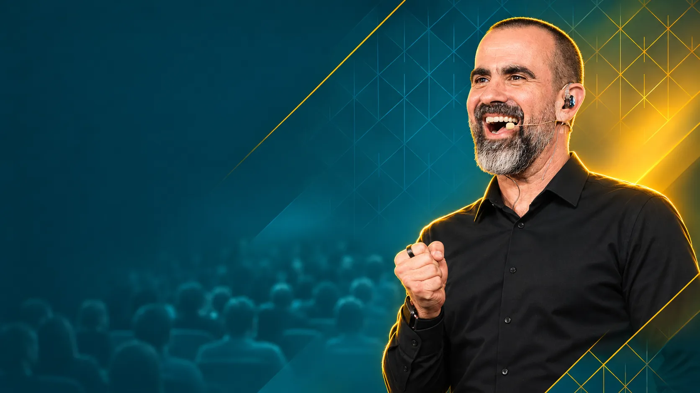
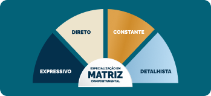
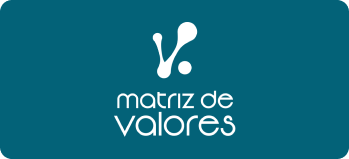
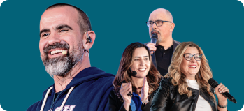
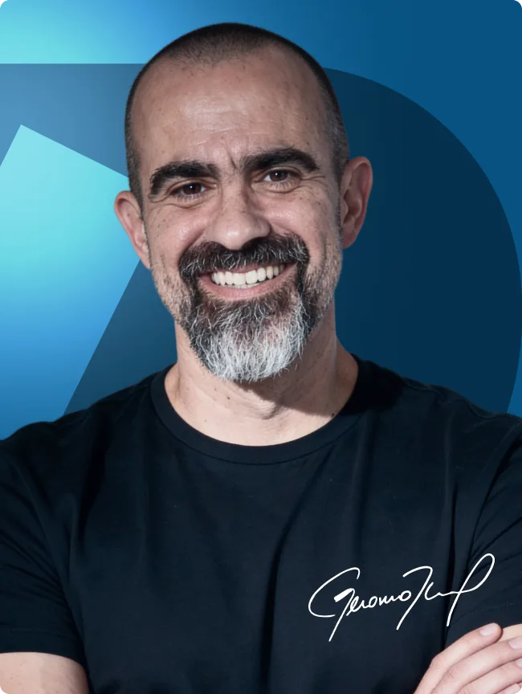

Hérverton Sobrinho
De estagnado no serviço público a 3 promoções para cargos de chefia, com o coaching quase dobrando a renda do mês.

A Black do Coaching: pela primeira vez, a Formação em Coaching Criacional entra numa Black.
De R$ 4.995 por 12x de R$ 249,26 ou R$ 2.497,50 à vista
Gente como você, que começou com um sonho e fez dele uma profissão.
De estagnado no serviço público a 3 promoções para cargos de chefia, com o coaching quase dobrando a renda do mês.
Bancário que iniciou no Coaching como renda extra realiza transição total de carreira: “Cada cliente hoje é um mês de salário que eu ganhava.”
Cirurgião oncológico descobre no Coaching como liderar equipe, migrar para o particular e ainda operar de graça quem não pode pagar.
De frustrada profissionalmente para carreira com faturamento mensal de +R$ 30.000: “Me encontrei sendo quem eu sou.”
De gestora de liderança a Coach que cobra R$ 5.000 por processo e fecha contratos de R$ 100.000.
8 meses depois da FCC, pediu demissão e encerrou negócio próprio para viver de Coaching: “Faturo 10x mais do que com 2 fontes de renda antes.”
Índice de aprovação de mais de
90%Não é à toa que resultados como esses são o padrão dos nossos alunos e alunas. Nem que o IGT seja hoje a escola que forma os Coaches mais bem pagos do mercado.
O IGT tem mais de 90% de aprovação dos alunos. O que explica tamanho índice em uma escola que já formou milhares de pessoas? Metodologia. Preparo. Prática.
Em apenas 8 dias, você sai pronto para aplicar o Coaching Criacional. Sem enrolação.
E ainda leva um certificado internacional, para você atuar em qualquer parte do mundo, se assim desejar.
Para quem quer ter uma nova profissão e poder trabalhar de qualquer lugar do mundo, só precisando de um computador e acesso à internet — e potencial de faturar mais de R$ 10.000/mês.
Normalmente, é aquela pessoa que não está feliz com sua carreira atual ou está desempregada, em busca de uma nova profissão.
Como foi o caso da Clarissa Boeira, que passou a ganhar mais com 1 processo de Coaching do que o salário do mês inteiro no emprego anterior.
Só pra você ter uma ideia, há 4 anos ela é Coach de agenda lotada e já chegou a atender 23 clientes ao mesmo tempo.
Isso também aconteceu com a Laíse Vieira, que relatou que o maior ganho para ela, vivendo de coaching, foi poder passar mais tempo com o filho de 7 meses.
É aquela pessoa que quer trabalhar nas horas vagas sem precisar fazer uma transição de carreira. E são inúmeros casos assim.
O Rafael Serpa, por exemplo, que é Servidor Público e mantém o Coaching como 2ª profissão, atendendo dezenas de clientes.
O Hérverton Sobrinho é outro. Ele estava estagnado em seu cargo público quando entrou na FCC.
Depois disso, ganhou 3 promoções para cargos de chefia e passou a atender como Coach nas horas vagas. Nas palavras dele, “a remuneração do coaching quase dobrou o meu financeiro mensal”.
O profissional que foi promovido porque entregava resultado. Mas que nunca aprendeu a fazer o time entregar. Cobra, incentiva, dá feedback, e o resultado não vem. Não é culpa sua. É que liderar pessoas é uma técnica, e técnica tem método.
Não é por acaso que empresas multinacionais, como a Ernst & Young, passaram a treinar literalmente todos os seus líderes em Coaching.
Não é à toa, também, que Eric Schmidt, ex-presidente do Google, e Bill Gates afirmam que “todo mundo precisa de um Coach”.
Olha o caso da nossa aluna Paulinha: depois da FCC, ela bateu sua meta do ano em menos de 6 meses e hoje treina outros líderes para terem resultados tão expressivos quanto os que teve.
Eu não sei qual é o problema que te mantém na média hoje. Mas, até conhecer o Coaching, a minha vida era sobreviver por mais um dia numa carreira que me aprisionava. Que contaminava, uma a uma, todas as áreas da minha existência.
Hoje, posso dizer que, graças a essa Metodologia, eu me tornei outra pessoa: com uma carreira fora da média, um dinheiro fora da média, um casamento fora da média, com a saúde aos 52 melhor que aos 30, com filhos fora da média. E não sou um caso isolado.
O Felipe Pereira, em 3 meses, bateu seu recorde de vendas na empresa. O Jefferson Silva, em 20 dias, foi promovido a um cargo de gerência. A Regina Borges, que temia ser demitida, passou a ser reconhecida e colocada em projetos importantes. São literalmente milhares de alunos com resultados como esses.
Comece agora e ganhe de presente...
Existem 4 matrizes comportamentais:
Aqueles dotados de grande carisma e poder de persuasão, que inspiram pessoas.
Aqueles dotados de extrema autoconfiança, que se dão bem com desafios e dificuldades.
Estáveis, pacientes e leais, de ritmo constante e alto grau de conservadorismo.
Organizados e responsáveis, hábeis em controlar processos e rotinas repetitivas.
Para que uma pessoa possa se destacar em sua função, é preciso que ela tenha o perfil adequado. E, se ela não tiver, é possível que certas habilidades sejam desenvolvidas. É aí que você entra em ação!
Com a Especialização em Matriz Comportamental, o Coach consegue monetizar as análises de matriz comportamental, além de poder oferecer um processo de coaching com foco no resultado almejado. E o melhor disso tudo?
Esse é um bônus da Formação em Coaching Criacional. Assim que você concluir a sua inscrição, você ganhará esse presente de forma 100% gratuita!
E tem mais...
Quando eu era Advogado da União ganhando R$ 21.000 por mês, quase todo mundo achava que eu tava feito. Mas eu definhava por dentro. E não entendia por quê.
Foi numa sessão de coaching que descobri: meus valores eram Desafio e Contribuição. E no emprego público, eu não tinha nem um nem outro.
Entender isso MUDOU tudo.
A Matriz de Valores mapeia o seu “por quê”: o que verdadeiramente te move, o que te paralisa, o que te faz reagir de formas que você mesmo não entende.
Como Coach, quando você identifica os valores do seu cliente, liderado ou de você mesmo, você sabe exatamente onde está a trava (e como destravá-lo).
Essa especialização é sua, gratuitamente, ao concluir sua inscrição na FCC.
Bônus exclusivo
Assim que você finalizar sua Formação, você terá acesso a uma mentoria por mês, durante o período de 6 meses, com um Trainer do IGT International Coaching.
Ou seja, você poderá tirar todas as suas dúvidas sobre o Coaching Criacional, a Metodologia, as Ferramentas e os atendimentos com seus clientes e/ou liderados.
São 6 encontros ao vivo, um por mês, com os trainers do IGT.
Isso significa que, além da melhor condição da história da Formação + as Especializações em Matriz Comportamental e Matriz de Valores, você ainda ganha 6 meses de acompanhamento com o meu time de trainers.
Forme-se junto com os Coaches mais bem pagos do mercado. Comece do absoluto zero e saia em 8 dias pronto para aplicar o Coaching Levado a Sério na sua vida e sua carreira.

Desenvolva uma visão verdadeiramente profunda de como cada pessoa funciona (inclusive você), e leve o potencial de cada projeto para o próximo nível.

Tenha clareza que 99,9% das pessoas não têm sobre os valores que pautam a sua vida e a vida dos outros. Aqui, você aprende a desenvolver planos alinhados a eles.
Economize anos de experiência com essa especialização, e comece atendendo com a segurança dos Coaches mais bem pagos e experientes do mercado.

Receba todo o suporte e esclarecimento de dúvidas pra aplicação do Coaching Levado a Sério em mentorias com os melhores Coaches do mercado.
Receba na sua casa, em qualquer endereço do Brasil e sem nenhum custo adicional, o material completo pra você ter uma experiência única e diferenciada, que levará pra toda a vida.
A oportunidade que você tem hoje na sua frente não é uma mera promessa, como você vê todos os dias na internet. Também não é mais um curso, que você vai comprar empolgado, fazer um pouco e largar para nunca mais abrir de novo.
A Formação em Coaching Criacional é, como o próprio nome diz, uma formação.
Uma formação robusta, profundamente validada por CEOs, líderes, Coaches, médicos, advogados... todas as profissões que você pode imaginar. Os mais de 90% de aprovação não me deixam mentir.
A comparação mais próxima que eu consigo ver é um MBA. E, sendo bastante sincero aqui, dificilmente você encontra um bom hoje por menos de R$ 30.000.
Mas eu sei o nível de transformação que o Coaching Levado a Sério gera nas pessoas. Eu sei como o crescimento dessa metodologia é positivo para mim, para você, para os seus clientes, para a sua empresa, para a sua família, para toda a sociedade.
Não é à toa que Jack Welch, considerado um dos maiores executivos de todos os tempos, disse que “no futuro, todo líder será Coach – ou será varrido do mercado.”
Por isso, eu ofereço sempre uma condição especial para quem deseja entrar (menos de R$ 10.000).
Nas últimas turmas, a Formação chegou a ser oferecida a R$ 4.995. Só que esta é A Black do Coaching, e é a primeira vez que a Formação entra numa Black. Por isso, eu vou te dar mais 50% em cima desse valor.
E olha o momento: novembro é quando a gente faz o balanço do ano e decide como quer entrar no próximo. Quem decide agora entra em 2027 com uma profissão nova nas mãos.
Então, NA BLACK DO COACHING, você não vai precisar investir R$ 30.000 de um MBA... nem os R$ 4.995 das últimas turmas.
DE R$ 9.990
R$ 4.995
Por R$ 2.497,50 à vista ou em até 12x de R$ 249,26

Geronimo Theml é escritor Best-seller, palestrante internacional e referência no desenvolvimento humano há mais de 20 anos. Como Coach e treinador, já impactou dezenas de milhares de pessoas com seus treinamentos transformadores.
Ex-advogado da União, tomou a decisão ousada de deixar a estabilidade do serviço público para seguir sua missão: ajudar pessoas a destravarem seu verdadeiro potencial e construírem uma vida de propósito e realização.
Além de sua atuação no Coaching, é fundador do Instituto O Bem Nunca Para e idealizador do Movimento Dia Mundial Sem Fome, uma iniciativa que apoia a distribuição de alimentos no dia 16 de outubro – data reconhecida pela ONU como o Dia Mundial da Alimentação.
A Formação em Coaching Criacional é uma formação completa do IGT Coaching em que você terá acesso a toda a metodologia criada por Geronimo Theml para aplicar com clientes e liderados. São 8 dias seguidos de formação com toda a metodologia do Coaching Criacional esmiuçada e as ferramentas que você precisa para fazer processos bem-sucedidos de Coaching.
A Formação em Coaching Criacional é 100% online, para você fazer de onde quiser.
A Formação em Coaching Criacional será de 17 a 24 de março de 2027.
Você será acompanhado pela equipe de trainers do IGT Coaching ao longo de toda a formação, podendo esclarecer suas dúvidas com o Time, expor suas dificuldades e participar de mentorias diárias ao longo de todo o processo. Além do acompanhamento ao longo de toda a formação, você também terá mentorias em grupo, um encontro mensal com a equipe de trainers que vai ajudar você a ter resultados robustos na aplicação da metodologia.
A Formação em Coaching Criacional tem duração de 8 dias e um total de 84 horas de conteúdo.
Você sairá da Formação pronto para fazer sua primeira sessão de Coaching com um cliente pagante.
Sim. Você terá acesso a todas as ferramentas que precisa para conduzir um processo completo de Coaching com um cliente, passo a passo, da primeira à última sessão.
Assim que finalizar a Formação, você já estará apto ou apta a realizar seu primeiro atendimento como Coach. Você entrará como é hoje e sairá um Coach.
De acordo com o relatório da International Coaching Federation, os ganhos mensais médios de um Coach na América Latina são de cerca de R$ 9.100 por mês.
Mas sua remuneração pode ser substancialmente maior do que isso. Não são poucos os Coaches que cobram entre R$ 15.000 e R$ 25.000 por um processo de Coaching de dez sessões. Um Processo com Geronimo Theml, por exemplo, sai hoje por R$ 100.000. Para você que vai começar agora, os ganhos iniciais médios ficam entre R$ 200 e R$ 500 por hora de sessão (ou seja, entre R$ 2.000 e R$ 5.000 por um processo completo).
Com certeza. A Formação em Coaching Criacional é voltada para quem quer ter domínio total da metodologia de Geronimo Theml para se profissionalizar, aplicar com liderados ou mesmo na própria vida. É uma Formação criada para você começar do zero e sair pronto para fazer sua primeira sessão.
Sim. A Formação em Coaching Criacional leva para você a metodologia criada por Geronimo Theml com começo, meio e fim. É uma metodologia exclusiva do IGT Coaching. E muitos coaches formados em outras instituições entram na Formação em busca de abordagens mais efetivas para aplicar com seus Coachees.
A Formação em Coaching Criacional é indicada para:
Sim. Você receberá seu certificado após finalizar a Formação. O melhor de tudo: nosso Certificado é internacional, você estará apto para atender em qualquer lugar do mundo.
Sim. A metodologia do Coaching Criacional foi inteiramente desenvolvida por Geronimo Theml e sua eficácia é comprovada por centenas de clientes e milhares de alunos.